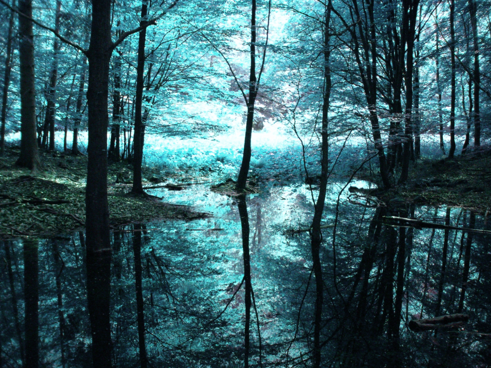
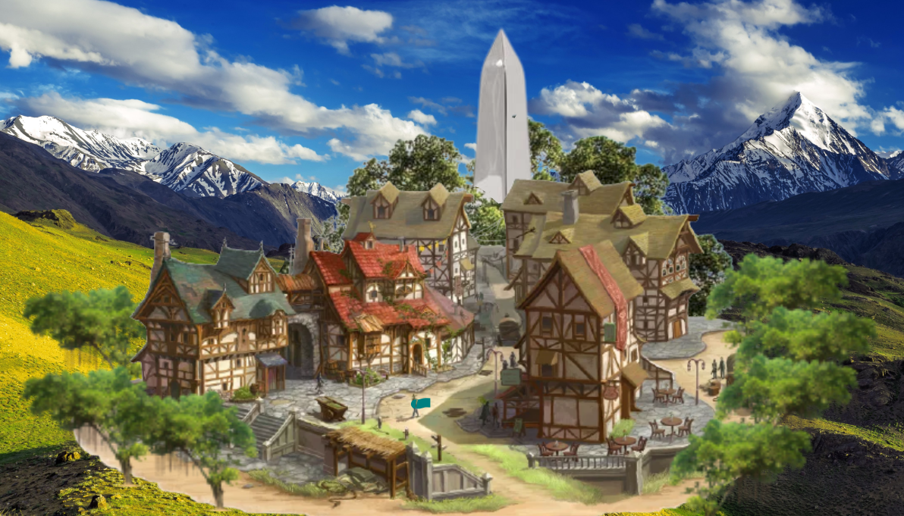
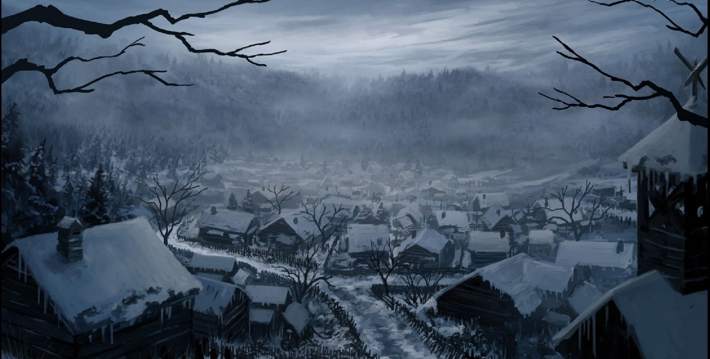

In the Neolithic continent of Vanhamaa, humans live side by side with the almighty velim without the use of written words. But when the memory-impaired Ryeles sketches the first readable hieroglyphs, history changes: the Pastseeker Zahari notices her discovery and leads her through a dangerous path in order to unravel the origin of both humans and velim. Their fates will cross Tesfaj’s, an ambitious revolutionary who seeks to exploit this knowledge to upend the veliode oppression over humans.
Core themes: Knowledge & communication, collective action, found family.
Length: 🇪🇺 58k words - 🇮🇹 56k parole
Overwhelmed by guilt, Ryeles leaves Opal. Tesfaj suspects there’s something darker behind her grave decision, and sets out with the New Chronicles, Dia and Vieras to find out Ryeles’ true colors. Their travels across the continent will endure bloodthirsty veliode emissaries, the hidden powers of linh and artelis, natural disasters, the trust of Opal and forbidden lairs of veliode legacy. Will Ryeles and Tesfaj manage to get back to Opal alive?
Core themes: Violence & direct action, meaning of democracy & consensus, sabotage.
Length: 🇪🇺 54k words - 🇮🇹 51k parole

Opal is on the brink of collapse. The veliode threat keeps inching forward, escalating in control and brutality. The Right Hand, a rebellious coalition of zealots and refugees, promises to liberate the United City once and for all, through whatever means necessary. An all-out clash is on the horizon, but Ryeles, Tesfaj, Dia, Vieras and the whole Opal know there have to be other ways to prevent the end of human dreams. Blitzing through everything the velim throw at them, they come together for one last endeavor for the fate of humanity and its liberation from the velim.
Core themes: Resistance, liberation & regeneration, urban guerrilla, direct action, guerrilla consensus.
Length: 🇪🇺 52k words [under revision] - 🇮🇹 [in traduzione]

“The Old Land” in the Ancients’ Language, Vanhamaa is a diverse continent where a multitude of biomes, ethnicities and animals coexist. The four so-called “veliode cities” (highlighted in blue on the map) are the ones administered by the velim, a powerful non-human species of immense intellect and powers. The United City of Opal (highlighted in emerald on the map) is the only one where the velim are absent and metallurgy is being developed; under the Silver Obelisk, humans take decisions on their own accord. History, politics, arts, traditions, climates and societies differ from place to place, creating a mosaic of human and non-human cultures.

“Tall, statuesque and without limbs; their porcelain mask instead of a head, expressionless and slender, barely laid on their torso. This was made of deep blue metal, the color of a starry night reflected on the frozen sea. They didn’t have any physical trait that differentiated males from females; no human had ever seen a vel being born nor even give birth or lay eggs. Their telepathic voices were neutral, and they referred to themselves and other velim as genderless.”
“On their ‘skin’, if such can be called since it was neither soft nor warm nor auburn like mine, were dozens of engravings and decorations, from the simplest to the most detailed and complex. They were symbols of prestige and privilege, of how brilliant was the vel and which auxiliary families worked under them. The more a vel’s body was decorated, the more humans should pay them respect.”
“Opal’s legends say that Earth, Sea and Sky were one; but Sea first abandoned the others, since it wanted to lay quiet. Earth and Sky tried to hold together, but it was impossible: the balance was broken and they too were forced to part. The Sky left the velim as a gift, who yearn for their origin but are bound to Earth. But the Earth still felt lonely, so it tried to reach for the Sky: so the Silver Peaks yearn for the Sky, shooting thunders to get an answer. The Sky, unable to reach back, cries and floods the Streams’ Plateau with its tears.”
Despite being barred from the supernatural world and bound to the natural one, humans can still glimpse manifestations of the former through linh, the mediator between the two. Its properties are as powerful as they are mysterious; few understand it and only the velim can control its flow. However, both Zahari and Tesfaj are set to discover its true origin and powers, no matter the consequences.
A medium veliode city located in the cold oceanic northwest, Zynthie is home to around 1'000 auxiliary families, who serve the velim, and 200 free families. Most of the latter live in the densest area around the harbor, while the peasants work the available land between the eastern Calm Sea and the Endless Ocean westward, or get by fishing and herding. Notably one of the most hostile places to live in: the long, windy winters and the hazardous Cerulean Mire north of the city make it one of the most secluded cities in Vanhamaa. Experienced guides are needed to cross the lethal swamp unharmed.
Around fifty velim live in the White Pillars, tall structures with no doors nor windows that can only be accessed from their opening on the top. They administer the auxiliary families and conduct unfathomable rituals on linh.
“Only when the vegetation got crowded with sky bamboos and teal ponds we realized we had entered the Cerulean Mire. The various hues of blue that the plants drew from the ever-present water were interrupted only by the occasional honeysuckle or aruncus flowers. Both were of a vivid coral orange, which stood out against the surreal indigo background. I was used to those colors, but I couldn’t imagine how eerie and alien they must have looked to a foreign eye.”
Zynthians believe that the Cerulean Mire is alive and whoever attempts to cross it without the velim’s favor will be devoured. Ravenous creatures, such as the bearded cranevultures, hunt anything that survives its deadly waters.

“In less than a sixet, we sighted the Mirror Archipelago: countless tiny islands sprawled across the Calm Sea. Yurieth warned us: their name was not just for beauty. «An inexperienced navigator would quickly lose themselves,» she explained while steering the boat at the helm. «Hundreds of shores which look all the same, like they’re all reflections of each other. Many just choose to drown.»”
“It was the perfect place for me to chase my dreams. It was the only human city, at the center of the continent: no vel to oversee, no endless question times, no excessive requests to abide to. Opal was the city everyone dreamed of.”
“On top of the Plateau was Opal’s mysterious silhouette, its houses of wood and white daub immersed in tropical foliage. Its metallic obelisk, a timid but radiant replica of the White Pillars, was enveloped in branches and reflected a rogue sunray escaped from the clouds’ stronghold. Behind it, the Silver Peaks towered majestic, their summits ceaselessly stormed by thunders.”
Nivjö is the northernmost large settlement in the continent. Locked inside the Eternal Valley, it is surrounded by mountains so tall that the sunlight never reaches the Slums, a low-lying zone where most of the materially deprived herders and farmers live.
Nivjö became infamous among humans for the harsh rule of the velim and the ruthlessness of the free families, who specialize in trade and haggle. They reside in the Maga’ala, an uphill fort in the middle of the city where the sun can be seen directly.

The tallest of the Silver Peaks around Opal, legends around it say it’s the only place in Vanhamaa where Earth can touch Sky. Thunders constantly ravage its summit, and few dare to venture close to it.
Shrouded by stormclouds and far away from both humans and velim, living secrets are hidden within it.
A young and memory-impaired Zynthian, since her childhood she's been fascinated by the glyphs etched on the velim’s skins. But in her pursuit to mastering her craft, she will run into discoveries and pasts that will set history in motion.
An experienced hunter of relics, she leaves Opal looking for a worthy apprentice. Insatiably curious and endlessly determined, she is willing to put everything on the line for the sake of knowledge. She believes that linh is the key to unveiling the origins of humans and velim.
A fiery revolutionary from Nivjö’s underclass, his only purpose in life is to end the veliode tiranny in his homecity. Ruthless, selfish and practical, his travels across the continent will give a new direction to his struggle.